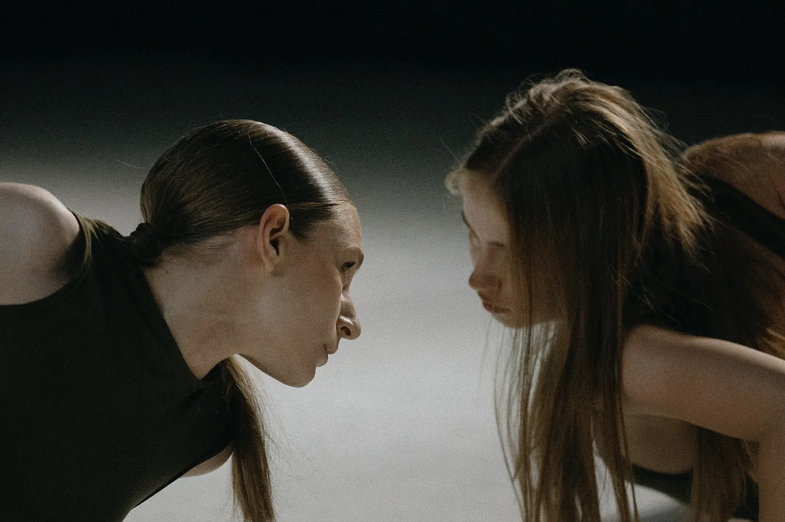

Что снимаю
Снимал для: LIBERTY Dance Studio · Elefunk · High Heels Convention · EXO BALL · спектакль «СЕМЬ» · The Sun Line · учебный театр школы-студии МХАТ

Снимал для: LIBERTY Dance Studio · Elefunk · High Heels Convention · EXO BALL · спектакль «СЕМЬ» · The Sun Line · учебный театр школы-студии МХАТ
 Андрей Ивлиев · обо мне →
Андрей Ивлиев · обо мне →